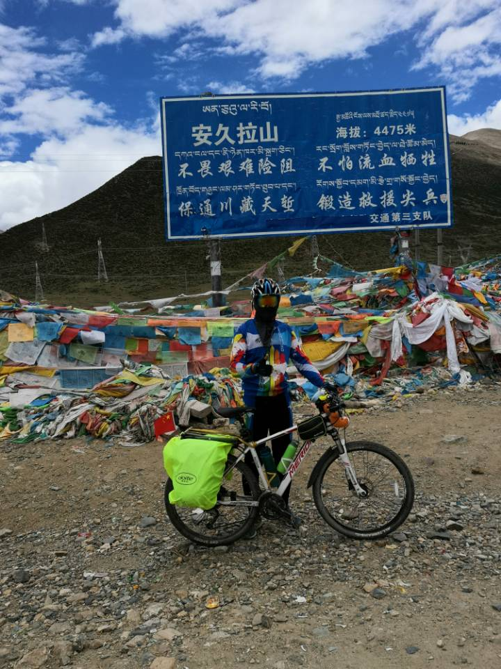
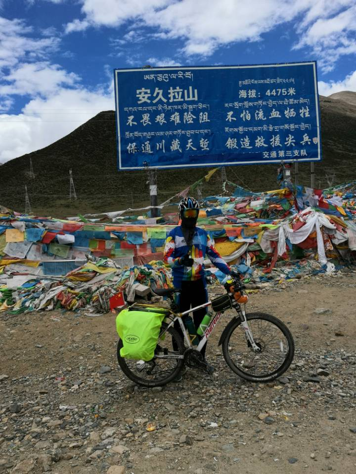
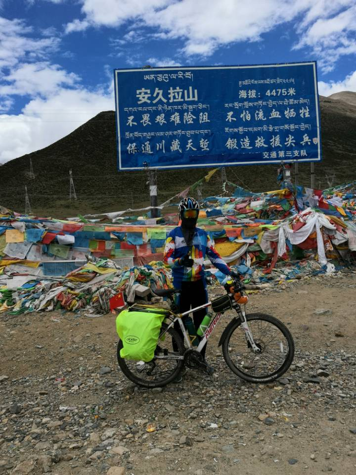

Ziyao
Zeng
Home
Research
Adventure
About Me
Sophomore of
ShanghaiTech University
majoring in Computer Science
Innovative AI-Scientist with Enterprise
Enthusiastic Adventurer and Zeal Environmental Volunteer
|
LinkedIn
|
CV
| Email: zengzy@shanghaitech.edu.cn
Website format from
Xingyi Zhou
.
Last updated August 2021
My Research
My research interest includes Computer Vision, Bioinformatics, Machine Learning and Deep Learning.
I'm currently a research assistant of
PLUS Lab
of
ShanghaiTech University
supervised by
Prof. Xuming He.
Besides, I'm also a research assistant of
GRASP Lab
of
University of Pennsylvania
supervised by
Prof. Jianbo Shi.
For my detailed research experience, please see my
CV
.
My Adventure
I am a big fan of adventure who is enthusiastic about cycling, hiking and mountain climbing.
In 2019, I have cycled cross Tibet for 28 days from
Chengdu
to
Lhasa
for 2135 km.



 
